Movie review by : SFAM
Year : 2006
Directed by : Warren Amerman
Written by : Warren Amerman & Marty Langford
Degree of Cyberpunk visuals : Low
Correlation to Cyberpunk themes : Medium
Rating : 6/10
Key cast members :
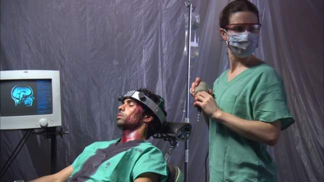
Overview: Rarely do we find low-budget horror movies aspiring to be as intelligent and ambitious as Magdalena's Brain. Reportedly shot on a shoestring budget of $25 - $30K, Magdalena's Brain is a professional looking film with some interesting man-machine interface ideas. To limit costs, most of the movie takes place in a single warehouse setting. Unfortunately, this psychological horror is probably a bit too slow for most, and doesn't have enough gore for the average horror fan (although there are a few good freak-out scenes). But if you do stick with it, you get treated to a fascinating ending twist.
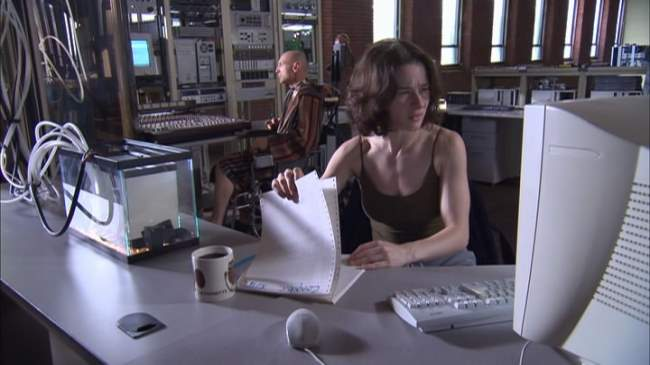
The Story: Former brain surgeon, Magdalena (played wonderfully by Amy Shelton-White) is now a reclusive alcoholic, living in a warehouse, who continually changes out shrinks in the hopes of gaining some semblance of peace. Four years after a tragic accident that left her brilliant husband-scientist, Arthur (Sanjiban Sellew) a quadriplegic and their research in tatters, Magdalena has persevered in the fleeting hopes that things will improve. Magdalena has designed an implant that allows computer-assisted dialogue with her husband. With communication restored, they have been able to continue their research in developing a synthetic brain that processes information 1000 time faster than humans. While the last four years have been slow going, recent advances have shown promise. Currently a blank slate, the organic, crystalline brain structure appears ready memories implanting. Andrew (David Joseph), a love struck former patient of Magdalena (he has inoperable brain cancer), seems to be an obvious test subject, as he will do anything to win over Magdalena.
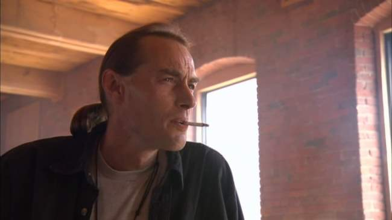
Magdalena reluctantly takes Arthur's advice and accepts the help of her creepy brother, Jim (Robert Weingartner), in working out how to kick-start the organic crystalline brain. First, they will download Arthur's memories into the crystalline structure, then insert the structure into Andrew's brain, and finally they will remove the tumor. As the story continues, Magdalena becomes more unstable. As everything comes to a head, it appears as if the same issues that led to the tragic accident four years ago might be recurring.
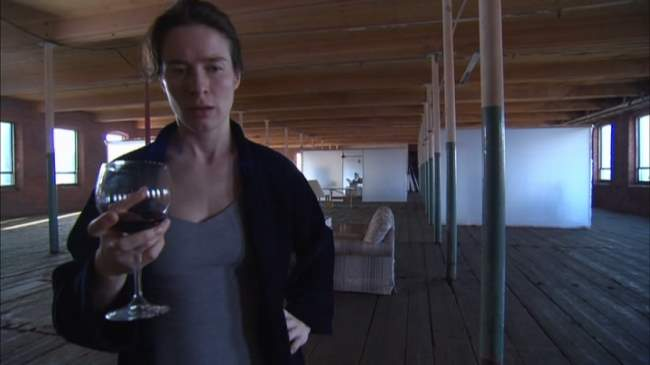
The Pacing: The pacing in Magdalena's Brain is problematic in places. The first half of the movie crawls at a snail's pace. In part it's due to the plot, but the editing decisions certainly contribute. Eventually, it picks up in the second half. The middle of the second half is really where Magdalena's Brain hits its stride, both in plot and pacing. The movement is brisk and the scenes really tie together well. Unfortunately, the ending action sequence comes across a series of jumbled scenes (again, I'm blaming the editing here). Instead of the frantic chase, they would have been better served having their victim do the slow, bloody crawl, with Magdalena walking after while engaged in her personal struggle. The story would have worked the same either way, but the chosen course asks us to believe that a brain surgeon can't determine if someone is dead, and that a guy who just had a hole drilled in his brain can run for his life.
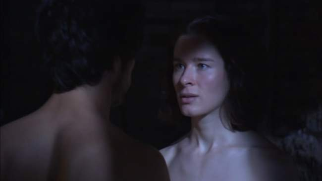
The Acting: If there's one decision that Director Warren Amerman made that other extremely low budget film projects should consider emulating was hiring a real actor/actress to play the lead role. Even with having only a $25,000 budget, a large chunk of that went toward hiring Lost-Angeles based actress, Amy Shelton-White. Had they not done this, Magdalena's Brain might have been a disaster. Shelton-White shines to the point that she single-handedly carries the project toward respectability, while adeptly displaying a wide range of talent and emotion. The script is problematic in places, the pacing is too slow, and the rest of the cast are role players at best, but in the end this film still works due to Shelton-White's performance. Being in virtually every scene, she seems to bring out the best in the rest of the cast. I say this because the rest of the cast suffers when in monologue type situations, but generally hold up well when interacting with Amy. David Joseph (Andrew) in particular looks really shaky in places where he's basically on his own, but gets lots better when interacting with Shelton-White. I haven't seen Shelton-White in anything else, but clearly she has the chops to go places. Other the lead, the only performance with mentioning is Robert Weingartner ? the "look" he generates as a creepy side-kick really worked well.
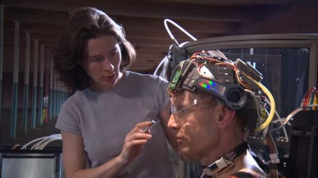
The Cinematography: Often indie films that venture into the Science Fiction genre attempt to make up for low-budget effects with innovative cinematography and lighting. This definitely is the case for Magdalena's Brain. The use of lighting and shadow always seems to be in the forefront of Amerman's thinking when composing a shot. Some scenes, such as the bowling scene, really don't seem to have a place in the film from a story standpoint, but are probably left there due to the wonderful lighting and composition. Throughout the film Amerman is able to take a truly dingy set and come up with some wonderful shots. Also interesting is the lighting and sound choices for the flashbacks, although the horror shots have a cheesy low-budget feel to them. This, along with Shelton-White's performance is able to help get the viewer through some of the pacing and editing issues.
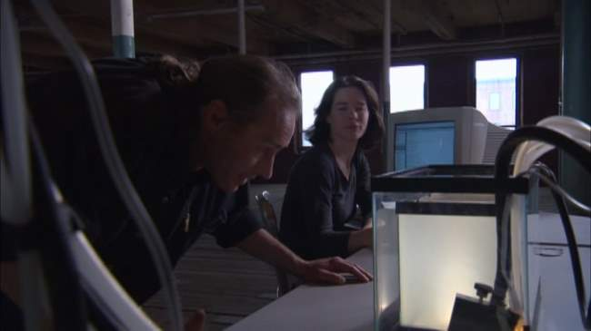
Problems With Organic Brain Design: Magdalena's Brain uses a different approach toward creating AI. Instead of building a set of programs that mimic some trait of humanity (referred to as the "brute force method), they attempt to replicate the operations of a brain. Through the creation of a "crystalline lattice work in a gel suspension" ? the thought is to create a structure that supports the firing of electrodes in a way that allows it to build its own pathways and connections. This part of the techy "mumbo jumbo" was wonderfully thought out, sparking interesting thoughts on how one might go about connecting such a "blank slate" learning structure artificial senses so that it might interact with the outside environment. One can imagine that a structure such as this, once connected to sensory input could grow at an impressive rate
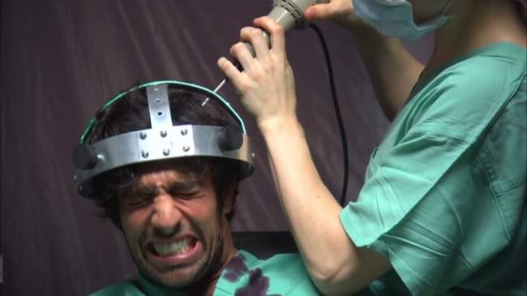
Unfortunately, this is where their science falls apart. They "solve" the blank slate problem by simply "downloading" Arthur's memories into the crystalline brain. Worse, the brain will apparently make its own pathways using a "first-come, first-served" method of storage. Not only does this approach smack of a "miracle occurs here" scaffold, it also removes most of the innovativeness of the crystalline brain learning structure ? as opposed to the pathways being organically grown based on ongoing input from its environment, they simply load a bundle of memories (which are apparently discrete chunks of data) up in sequential fashion. In doing so, they seem to be valuing the mass-storage view of the brain while discounting the interconnectedness of the pathways and concepts. This wouldn't be too much of a problem accept that their synthetic brain seems based on creating its own connections based on organic growth.
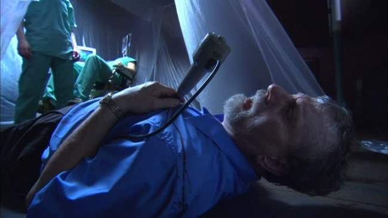
Integration of Synthetic Processing Structures with Human Brains: The most interesting cyberpunk thought in Magdalena's Brain involves integrating synthetic processing structures with human brains. In the movie, the integrated structure will already have a sentient presence in it (see the downloading memories part above). This is an interesting approach toward building a cyborg with synthetic thinking capabilities, and is a somewhat different approach from say, the Ghost in the Shell method of increasing human capacity. In the GITS Cyborg model, computers are essentially integrated into the human mind, almost as a huge memory bank. The action thinking and decision making largely remain with the human portion of the brain (there are also fully AI processors like the Puppet Master, but they aren't cyborgs). In the Magdalena's Brain approach toward cyborgs, one wonders what happens when the two brain structures (synthetic and natural) occupy the same body ? will they work in harmony; will one dominate the other; or will a type of schizophrenia emerge? This is all the more interesting when transposed against the psychological struggle Magdalena is undergoing.
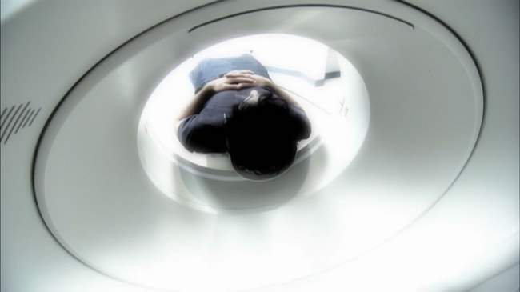
Is Magdalena's Brain Cyberpunk? Magdalena's Brain is one of those movies that I think barely makes it into the genre. It takes place in the present, not near future (at least that we can tell), and has no connections to evil corporations. Nor does it have much in the way of cyberpunk visuals. It does however have negative impact of technology down in spades, and an interesting take on the fusion of man and machine. For these reasons, I've decided to include it, but just barely.
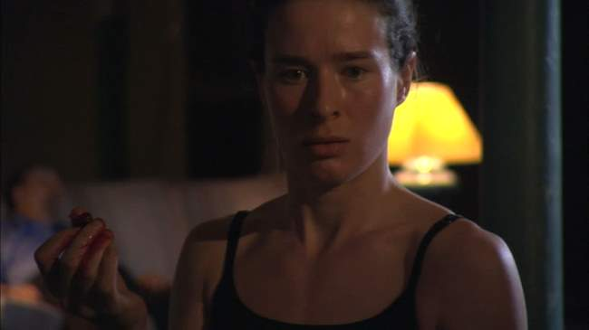
The Bottom Line: Magdalena's Brain puts forward a terrific production considering the virtually non-existent budget. It's very difficult to do a convincing science fiction movie on that type of shoot. I would like discuss the psychological horror aspect of Magdalena's Brain, but won't for fear of ruining the ending. The high points are definitely Amy Shelton-White's performance, and a good number of some well-shot scenes. The audio FX are also worth mentioning, but the score doesn't always fit. That said, the pacing issues will significantly reduce the potential market for Magdalena's Brain, as most horror (and many cyberpunk) fans won't stick with it long enough to get to the fast-paced ending. While it certainly has its problems, Magdalena's Brain gets a passing grade. There is enough here for indie fans to give it a go, and enough of a jolt at the end that many horror fans will enjoy as well.